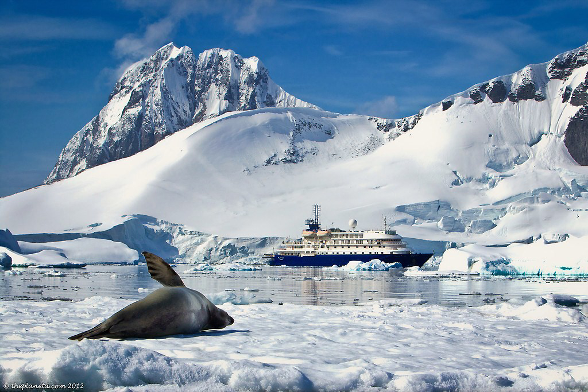

Continents
Africa
The continent of Africa is the world's third largest continent after Asia and the Americas (North and South America), with a total surface area, including several surrounding islands of 30,313,000 square kilometres.
America
America is the second largest continent in the world, after Asia. It occupies much of the Western Hemisphere of the Earth. It extends from the Arctic Glacial Ocean in the north to Cape Horn in the south, at the confluence ,of the Atlantic and Pacific Oceans that delimit the continent by the east and the west, respectively.
Places to visit in the Americas
- The Argentinean Patagonia, Argentina Argentinean Patagonia is a true treat for all travelers, not just those with a penchant for adventure. From the vast range of wildlife to the majestic mountains and jaw-dropping glaciers, the region showcases Mother Nature at its best. First-timers can't pass up a visit to the Argentine Lake District, Mount Fitz Roy and the Perito Moreno Glacier.
- Paradise Harbor, Antarctica Paradise Harbor, also known as Paradise Bay, is a wide embayment behind Lemaire and Bryde Islands in Antarctica, indenting the west coast of Graham Land between Duthiers and Leniz Points.
- Half Moon Island, Antarctica Half Moon Island is a minor Antarctic island, lying 1.35 km north of Burgas Peninsula, Livingston Island in the South Shetland Islands of the Antarctic Peninsula region. Its surface area is 171 hectares.


Asia
Asia is the largest continent on Earth. It covers 9% of the Earth's total surface area (or 30% of its land area), and has the largest coastline, at 62,800 kilometres (39,022 mi). Asia is generally defined as comprising the eastern four-fifths of Eurasia.
Europe
Europe, second smallest of the world’s continents, composed of the westward-projecting peninsulas of Eurasia (the great landmass that it shares with Asia) and occupying nearly one-fifteenth of the world’s total land area.
- Paris, France Paris, the City of Light, evokes romantic emotions in anyone who has ever visited. This centuries-old city is the most visited city in the world, and for good reason. There is plenty to do in Paris to satisfy travelers of all tastes.
- Rome, Italy Roma is a can't-miss spot on your trip to Europe. The aroma of fresh Italian cooking wafts through alleys, and historical sites sit at every turn. No visit to Italy's capital would be complete without checking out the Colosseum, St. Peter's Basilica and the awe-inspiring Trevi Fountain.
- Barcelona, Spain Barcelona's diverse architecture really makes the city stand out. Gaudí's Parc Güell and La Sagrada Familia are impressive, as are La Seu and Montjuïc Castle. When you tire of architecture, relax on the beach, eat the local food (tapas) or sip sangria along Las Ramblas.
- Swiss Alps, Switzerland Located south of Zurich, Bern and Basel, the Swiss Alps are a haven for winter sports enthusiasts. While skiing, hiking and snowboarding tend to dominate this region, you'll also discover quaint towns, serene lakes and gorgeous scenery. Plus, luxury mountain resorts are available throughout the region, making it a playground for all sorts of travelers.
- Santoroni, Grece Visit this Greek island for its abundance of diverse beaches. You'll find red sands at – you guessed it – Red Beach and black sands at Kamari Beach. But don't forget to save a day to travel to archaeological attractions like Ancient Thira and Ancient Akrotiri.


Oceania
Oceania was originally conceived as the lands of the Pacific Ocean, stretching from the Strait of Malacca to the coast of the Americas. It comprised four regions: Polynesia, Micronesia, Malaysia (now called the Malay Archipelago), and Melanesia.